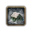

陸軍就是國家的陸上軍事力量。
陸軍的基本單位是部隊，滿員狀態下是1000名士兵。每個部隊的類型都屬於步兵、騎兵或炮兵之一。數個部隊被編組為軍隊。每支軍隊可以有一個 將軍或征服者。
徵召軍隊
徵召正規部隊需要在自己擁有的、未被佔領的省份，需要消耗 人力、 金幣及  時間。每個省份同一時間只能徵召一支部隊，如果在同一個省份徵召多支部隊，將會按照隊列逐一徵召。徵召部隊的基本花費和時間基於部隊的類型，然後計算修正和省份上特定建築的影響。剛徵召的部隊的士氣有最大值的50%。
時間。每個省份同一時間只能徵召一支部隊，如果在同一個省份徵召多支部隊，將會按照隊列逐一徵召。徵召部隊的基本花費和時間基於部隊的類型，然後計算修正和省份上特定建築的影響。剛徵召的部隊的士氣有最大值的50%。
人力
- 主條目：人力
徵召一支部隊需要消耗  1000人力。[1]人力也被用於恢復戰損的部隊。
1000人力。[1]人力也被用於恢復戰損的部隊。
部隊花費
 部隊花費計算如下：
[math]\displaystyle{ \text{部队花费} = \text{基础花费} \cdot \text{最大}\left( 100\% + \sum\text{部队花费修正},20\% \right) }[/math]
部隊花費計算如下：
[math]\displaystyle{ \text{部队花费} = \text{基础花费} \cdot \text{最大}\left( 100\% + \sum\text{部队花费修正},20\% \right) }[/math]
基礎花費
徵召部隊的基礎花費為：[1]
部隊花費修正
部隊花費可能受到通用修正和單獨修正相加的影響。部隊花費的最大生效上限為 -80% 。
通用修正
通用修正降低所有類型 陸軍單位 的花費。
| 條件 | |
|---|---|
| −20% | 信仰 |
| −5% | 壟斷 |
| −10% | 擁有 |
| −33% | 可選的難度獎勵（非常容易下的玩家獎勵或非常困難下的AI獎勵） |
| +1% | 每1點 通貨膨脹[2] |
理念與政策:
| 傳統 | 理念 | 獎勵/野心 | 政策 | |
|---|---|---|---|---|
| -10% |
|
|
|
|
決議和事件:
| 事件修正 | 觸發 | 持續時間 | |
|---|---|---|---|
| −10% | 漢薩軍改 | 呂貝克事件：「大會日」
|
直到君主更替。 |
| −20% | 火焰之地 | 馬拉維事件：「烈焰之地」 | 1年。 |
特殊修正
某些特殊修正只降低一種部隊的花費。
步兵
理念和政策：
| 傳統 | 理念 | 獎勵/野心 | 政策 | |
|---|---|---|---|---|
| -20% |
|
|
|
— |
| -15% |
|
— | — | — |
| -10% |
|
|
|
— |
決議和事件：
| 修正名稱 | 觸發條件 | 持續時間 | |
|---|---|---|---|
| +10% | 發行貨幣 | 革命災難事件：「瀕臨破產」
|
直至革命災難結束 |
| +25% | Obsolete Forces | The Peasants' War disaster event: 「Obsolete Forces」
|
until end of The Peasants' War disaster. |
| −10% | Grander Army | Offensive ideas event: 「Isn't our Army Grand?」 | for 10 years. |
| +10% | Less Grand Army | Offensive ideas event: 「Our Army isn't so grand」
|
for 5 years and 1 day. |
| +10% | Poor Iron | Generic event: 「Iron ore quality problems」 | for 2 years. |
| −5% | Military Focus | Republic event: 「Misdirected Focus」
|
for 2 years. |
| +5% | Trade Focus | Republic event: 「Misdirected Focus」
|
for 2 years. |
| −20% | Increased Land | Republic event: 「A Strong Army or Navy?」
|
for 10 years. |
Maritime ideas event: 「Generals Bothered」
|
for 10 years. | ||
| −10% | 瑞典軍事改革 |
|
直至遊戲結束 |
| −10% | Complete Serfdom |
|
for the rest of the campaign. |
| +10% | Increased Freedom |
|
for the rest of the campaign. |
| +10% | Restricted Serfdom |
|
for the rest of the campaign. |
|
for the rest of the campaign. | ||
| +20% | Greedy Janissaries |
|
until the monarch's death. |
| −10% | Surplus Equipment | Quantity ideas event: 「Surplus Equipment」 | for 10 years. |
| −10% | Rajput Recruitment |
|
for 10 years. |
| +10% | Nobility in Power | Aristocratic Coup disaster event: 「The $ESTATE_NOBLES$ Seize Power」 | until 「Curtail the Nobility」. |
騎兵
| 條件 | |
|---|---|
| +20% / −20% | |
| −20% | 高忠誠度的 |
| −10% | 壟斷 |
理念和政策：
決議和事件：
| 修正名稱 | 觸發條件 | 持續時間 | |
|---|---|---|---|
| +25% | Obsolete Forces | The Peasants' War disaster event: 「Obsolete Forces」
|
直到 The Peasants' War 災難結束。 |
| −10% | Grander Army | Offensive ideas event: 「Isn't our Army Grand?」 | 10年。 |
| +10% | Less Grand Army | Offensive ideas event: 「Our Army isn't so grand」
|
5年1日。 |
| +10% | Poor Iron | Generic event: 「Iron ore quality problems」 | 2年。 |
| −5% | Military Focus | Republic event: 「Misdirected Focus」
|
年。 |
| +5% | Trade Focus | Republic event: 「Misdirected Focus」
|
2年。 |
| −10% | Increased Aristocracy | Liberum Veto event: 「Further concessions demanded」
|
10年。 |
Plutocratic ideas event: 「Aristocrats concerned」
|
10年。 | ||
|
10年。 | ||
|
5年。 | ||
|
10年。 | ||
Dutch republic event (only
|
5年。 | ||
| +10% | Increased Plutocracy | Aristocratic ideas event: 「Merchants complain」
|
for 10 years. |
Dynastic event: 「Regent usurps The Throne」
|
for 20 years. | ||
| −20% | Increased Land | Republic event: 「A Strong Army or Navy?」
|
for 10 years. |
Maritime ideas event: 「Generals Bothered」
|
for 10 years. | ||
| −10% | Horse Population Boom | Quantity ideas event: 「Horse Population Boom」 | for 10 years. |
| −5% | Portuguese Trade Contacts | Malian event: 「The Wangara and the Portuguese」 | until Malian event 「Portuguese Meddling」
|
| +25% | Nobility in Power | Aristocratic Coup disaster event: 「The $ESTATE_NOBLES$ Seize Power」 | until 「Curtail the Nobility」. |
炮兵
理念和策略：
| 傳統 | 理念 | 獎勵/野心 | 政策 | |
|---|---|---|---|---|
| -20% | — |
|
— | — |
| -15% | — |
|
— | — |
| -10% | — |
|
— | — |
決議和事件：
| 修正名稱 | 觸發條件 | 持續時間 | |
|---|---|---|---|
| +20% | Poor Copper | Generic event: 「Poor Quality Copper」 | 2年。 |
| +10% | Western Military Influence |
|
10年。 |
| −10% | Cheap Iron | 數量理念組事件: 「Cheap Iron」 | 10年。 |
募兵時間
 募兵時間通過以下方式進行計算：
募兵時間通過以下方式進行計算：
- [math]\displaystyle{ \text{募兵时间} = \text{基础时间} \cdot \left( 100\% + \sum\text{募兵时间修正} \right) }[/math]
基礎時間
招募一支部隊的基礎時間為：[1]
募兵時間修正
募兵時間會被國家修正和省份修正所影響。
- 國家修正
| 條件 | |
|---|---|
| −20% | 壟斷 |
| −10% | 國家擁有 |
| +2% | 每一點 |
理念和政策：
| 傳統 | 理念 | 獎勵/野心 | 政策 | |
|---|---|---|---|---|
| -10% |
|
|
— | — |
| -5% | — |
|
— | — |
事件和任務：
| 修正名稱 | 觸發條件 | 持續時間 | |
|---|---|---|---|
| −30% | Recruits Flock to the Standards | 進攻理念事件：「Recruits flock to the standards」 | 持續10年 |
| +30% | Conscription Resisted | 進攻理念事件：「People don't want to be conscripted」
|
持續10年 |
| −5% | Trade and Production Cutbacks | 貴族共和制事件: 「Military Spending」
|
持續2年 |
| +5% | Military Cutbacks | 貴族共和制事件: 「Military Spending」
|
持續2年 |
| −10% | Legitimacy Questioned |
|
持續五年 或 玫瑰戰爭 結束 |
| −5% | Western Military Influence |
|
持續10年 |
| +50% | Sejm Refuse Troops | 波蘭文化組事件: 「The Sejm refuse to allow the mobilization of more troops」
|
持續到君主死亡 |
| −15% | 繁榮的軍事工業 | 完成任務: 「建立我們自己的軍隊」 | 持續10年 |
| 完成任務: 「防禦 $國家名$」 | 持續10年 |
- 省份修正
| 條件 | |
|---|---|
| +20% | 被 封鎖的省份[2] |
| +30% | 被 |
| +10% | 每一點 叛亂度[2] |
| −1% | 每點省份 |
不同兵種的配比
- 參見：陸戰#戰鬥部署
合理搭配一支部隊的步兵、騎兵、和炮兵的所佔比例，可以最大限度的提高這支部隊的戰鬥力。
- 一支部隊中的騎兵和步兵的比重不能超過某個數值，否則在戰鬥中會受到減益懲罰。
- 炮兵是遠程打擊兵種，會自動部署在第二排提供火力支援，可以有效的提高部隊的的戰鬥力。
- 在對應的戰鬥階段，後排的炮兵會給前排受到進攻的部隊提供一半自己的防禦點數。
- 炮兵如果部署在第一排，會受到雙倍傷害，所以應該把它部署在第二排。為避免前面這種情況，一支部隊中炮兵的數量不應該超過步兵和騎兵的總和。而且一旦交戰，要準備好足夠的步兵和騎兵部隊，隨時補充前排失去的部隊。
- 炮兵的招募費用是步兵的3倍，騎兵是2.5倍，因此招募一支同等數量的部隊，步兵佔比越大，性價比也越高，尤其是你的國家在招募騎兵或者炮兵有額外的懲罰費用時。由於側翼的攻擊效果，一支8000人的步兵軍團可以輕鬆擊敗一支3000步兵+2000騎兵的軍團。
- 將一支4萬人的兵團放在補給上限只有3萬人的省份，會造成士兵的大量損耗。為了儘量減少損耗，大兵團要穿越低補給的省份時，最好能兵分兩路行走，或者一前一後。
如果所屬科技組的騎兵作戰能力一般，那麼在戰場上部署的騎兵數量，能充分發揮側翼攻擊的效果就可以了。需要注意的是，電腦給你的自動佈陣並不足夠智能，如3軍科時，你有10步2騎，對手8步，你的兩個步兵會被騎兵擠在兩翼最外側看戲.因此，在某一軍科下要充分發揮騎兵側翼攻擊的效果，需要等同於騎兵側翼攻擊範圍的騎兵。在軍事科技達到18級或者30級時，由於部隊側翼的攻擊範圍增大，此時部署在兩翼的騎兵應該要有所增加。因為步兵起始側擊範圍是1，騎兵是2，這意味着當你的前排部隊數量剛好比對方的前面部隊數量多四個，那麼無論是左翼、還是右翼，部署4隊騎兵比僅部署步兵可以多打擊到對方一個單位。當軍事科技達到18級時，步兵的側擊範圍依舊是1,但是騎兵的側擊範圍將達到3,這時左右兩翼各部署3支騎兵就可以了。同理，軍事科技達到30級時，左右兩翼應該各部署4支騎兵。
示例（因版本變遷後的修改，圖文不符）：
- 早期： 16步兵、4騎兵、0炮兵

- 中期： 24步兵、6騎兵、10-30炮兵
- 後期： 32步兵、8騎兵、10-40炮兵
- 這套規則不適用於所有國家，你需要結合敵我雙方，步騎的優劣勢合理搭配。因此，當你玩的是安納托利亞、穆斯林、游牧科技組或者東歐國家時，在你騎兵兵種的強勢期（前三者3-14軍科，後者6-27軍科），經濟允許的情況下，將部隊中騎兵的比例填充到可以允許的上限（當然需要預留少許餘量以避免遭受戰術懲罰），能令你的戰損比有極大的提升。
- 佔據數量上的絕對優勢時，損失將減到最小。當敵我雙方部隊數量比例大於10：1時，將不會發生戰鬥，多的一方獲勝。無論軍事科技比對方先進還是落後，集中優勢兵力殲滅對方，不要在意一時的損耗。派遣一支部隊作為誘餌，將對方吸引到不利的戰場上，再進行合圍。
- 作為防守方面對優勢敵軍的情況下想要獲勝，一處地形對攻擊方不利的戰場是一個理想的選擇：
惡劣的地形將為攻擊方帶來 -1 到 -2 的戰鬥懲罰；或在河流、海峽處與跨河（海峽）而來的敵軍交戰；又或者是在敵軍兩棲登陸中。
維護費
每支軍隊每個月都需要花費一定數量的  金幣作為維護費。維護費可以在經濟面板進行調整，最多可降至正常維護費的一半。在減少維護費同時，軍隊的補員效率和
金幣作為維護費。維護費可以在經濟面板進行調整，最多可降至正常維護費的一半。在減少維護費同時，軍隊的補員效率和  士氣也會減少。當維護費處於最低水平時，部隊不再會補員，並且最大士氣會減少100%（可與其他士氣修正疊加）至0.51（即部隊能移動的最低士氣）。
士氣也會減少。當維護費處於最低水平時，部隊不再會補員，並且最大士氣會減少100%（可與其他士氣修正疊加）至0.51（即部隊能移動的最低士氣）。
陸軍維護費
一支陸軍的綜合維護費（拉滿維護費條時）由以下公式可得：
[math]\displaystyle{ \begin{align} \text{陆军每月维护费} = & \ 0.02 \cdot \left( \text{部队满员率} \right) \cdot \left( \text{基础部队花费} \right)\\ &\cdot \text{最大} \left( 100\% + \sum\text{部队花费修正},20\% \right)\\ & \cdot \left( \text{最大} \left( 100\% + \sum\text{陆军维护费修正},10\% \right) +\text{特殊兵种维护费修正} \right) \\ & \cdot \left( 100\% + 0.02 \cdot \text{军事科技等级} \right) \end{align} }[/math]
總而言之，每支部隊每個月需要的的維護費 = 這隻部隊  花費的2% [3] * 維護費修正總和 * 科技修正。因此，
花費的2% [3] * 維護費修正總和 * 科技修正。因此， 部隊花費的修正對部隊維護費同樣有影響。
部隊花費的修正對部隊維護費同樣有影響。
陸軍維護費的最大生效上限為 -90% 。
趣味玩法：
當玩家同時疊滿 -90% 部隊花費和 -80% 陸軍維護費兩項修正後，部隊的綜合維護費可以疊到100%×（100%-90%）×（100%-80%）=2%。
原本需要0.2  金幣每隊的步兵，和原本需要0.5
金幣每隊的步兵，和原本需要0.5  金幣每隊的騎兵，均只需要0.01
金幣每隊的騎兵，均只需要0.01  金幣的維護費（小數點後兩位進行四捨五入向上取整）。
金幣的維護費（小數點後兩位進行四捨五入向上取整）。
每隊炮兵亦只需要0.02  金幣的維護費。
金幣的維護費。
陸軍維護費修正
以下修正僅影響陸軍單位並且可以疊加計算（除了每級  軍事科技帶來的維護費 +2% 的修正[4]，此修正在計算完其他所有修正後才加入計算）
軍事科技帶來的維護費 +2% 的修正[4]，此修正在計算完其他所有修正後才加入計算）
| 條件 | |
|---|---|
| −25% | 是 |
| −20% | 為 |
| −15% | 徵收戰爭稅 |
| −15% | 是 |
| +10% / −10% | |
| −10% | 擁有 |
| −10% | 擁有 |
| −10% | 作為 |
| −5% | 壟斷 |
理念和政策：
| 傳統 | 理念 | 獎勵/野心 | 政策 | |
|---|---|---|---|---|
| -10% |
|
— | — | — |
| -5% |
|
|
|
|
註：基於1.25版本，數量、防禦、經濟三個理念組的相關增益改為 −5%  陸軍維護費，行政-數量形成的政策增益，同樣改為 −5%
陸軍維護費，行政-數量形成的政策增益，同樣改為 −5%  陸軍維護費。
陸軍維護費。
決議和事件：
| 事件修正 | 觸發條件 | 持續時間 | |
|---|---|---|---|
| −10% | 軍隊大整編 | 瑞典事件：「軍隊大整編」
|
直至遊戲結束 |
| −10% | Root.GetName議會休會 | 勃蘭登堡-普魯士事件：「Root.GetName議會休會」（需開啟
|
直至當前君主去世 |
| +10% | Administrative Problems | Quantity ideas event: 「Administrative Problems」 | for 10 years. |
| −5% | Regimental Pride | Defensive ideas event: 「Regimental Pride」 | for 10 years. |
超限維護費
- 參見：部隊上限
最終的維護費亦會受到部隊上限的影響。如果一個國家擁有超過其部隊上限的部隊數量，這個國家所有部隊的維護費會得到一個修正：
[math]\displaystyle{ \text{总维护费用} = \text{平均基础维护费用}\cdot\text{维护费用增加} \cdot\text{单位数量} }[/math]
軍隊質量
儘管  軍隊數量是戰爭中一個十分重要的因素，從長遠的角度來看， 軍隊質量與其相比有過之而無不及。在擁有更高的
軍隊數量是戰爭中一個十分重要的因素，從長遠的角度來看， 軍隊質量與其相比有過之而無不及。在擁有更高的  訓練度和
訓練度和  士氣的情況下，一支軍隊能夠勝過人數遠多於自己的敵人。在歐洲，
士氣的情況下，一支軍隊能夠勝過人數遠多於自己的敵人。在歐洲， 法蘭西和
法蘭西和  普魯士在某些特定年代便能很好的證明這一點。
普魯士在某些特定年代便能很好的證明這一點。
正確地選擇兵種和更高的軍事科技能很好地配合一些國家的理念和能力。幾乎在任何時候，儘快升級自己的部隊都是比沿用舊式部隊更好的選擇。
一些  理念組在被採納之後能過有效的提升部隊在戰場上的表現。為了更好的還原真實歷史，一些國家會擁有額外的軍事加成來模擬它們的軍隊強度。
理念組在被採納之後能過有效的提升部隊在戰場上的表現。為了更好的還原真實歷史，一些國家會擁有額外的軍事加成來模擬它們的軍隊強度。
士氣加成
在戰鬥中， 士氣為0時軍隊便會潰逃。每一點
士氣為0時軍隊便會潰逃。每一點  威望和
威望和  力量投射都能增加 +0.1% 的士氣。
力量投射都能增加 +0.1% 的士氣。
陸軍士氣加成
| 傳統 | 理念 | 獎勵/野心 | 政策 | |
|---|---|---|---|---|
| +20% | — |
|
— | — |
| +15% |
|
|
|
— |
| +10% |
|
|
|
|
| +5% | — |
|
— |
|
士氣回復加成
 士氣回復加成能縮短軍隊在潰逃或者調整維護費條以後回復到最大士氣的時間。
士氣回復加成能縮短軍隊在潰逃或者調整維護費條以後回復到最大士氣的時間。
陸軍士氣恢復加成
| 傳統 | 理念 | 獎勵/野心 | 政策 | |
|---|---|---|---|---|
| +15% | — | — | — |
|
| +5% |
|
|
|
|
訓練度加成
 訓練度是戰鬥中有着舉足輕重的影響，因為訓練度會給傷亡和士氣損失帶來修正。
訓練度是戰鬥中有着舉足輕重的影響，因為訓練度會給傷亡和士氣損失帶來修正。
作戰能力加成
作戰能力是一個影響部隊對敵人造成的傷害（包括士氣和傷亡）的數值。和訓練度相比，作戰能力加成只加強特定兵種而且對  軍事戰術沒有加成。
軍事戰術沒有加成。
步兵作戰能力加成
騎兵作戰能力加成
炮兵作戰能力加成
| 傳統 | 理念 | 獎勵/野心 | 政策 | |
|---|---|---|---|---|
| +10% | — |
|
|
|
| +5% | — |
|
— | — |
將領加成
以下修正是在將領能力值的基礎之上作添加。
陸軍將領衝擊
| 傳統 | 理念 | 獎勵/野心 | 政策 | |
|---|---|---|---|---|
| +1 |
|
|
|
|
陸軍將領火力
| 傳統 | 理念 | 獎勵/野心 | 政策 | |
|---|---|---|---|---|
| +1 | — |
|
|
|
陸軍將領機動
| 傳統 | 理念 | 獎勵/野心 | 政策 | |
|---|---|---|---|---|
| +2 | — |
|
|
— |
| +1 |
|
|
|
|
陸軍將領圍城
| 傳統 | 理念 | 獎勵/野心 | 政策 | |
|---|---|---|---|---|
| +1 | — |
|
|
|
軍事傳統
- 主條目：陸軍傳統
軍事傳統在軍隊進攻時給予強大的加成。高軍事傳統同時也能增加強力將領出現的幾率。0-100 的軍事傳統能帶來以下加成：
| +10% | 陸軍士氣恢復速度 | |
| +25% | 陸軍士氣 | |
| +10% | 人力恢復速度 | |
| +5% | 圍城能力 | |
| +0.10 | 五軍都督府派系影響 | |
| +0.10 | 貴族派系影響 | |
| +0.10 | 吉倫特派系影響 | |
| +0.10 | 國家軍事化程度 | |
| +5% | 貴族忠誠均衡點 | |
| +5% | 馬拉塔忠誠均衡點 | |
| +5% | 拉傑普特忠誠均衡點 | |
| +5% | 耶尼切里忠誠均衡點 | |
| +10% | 方陣步兵招募比例 | |
| +10% | 武士招募比例 |
 補給和損耗
補給和損耗
當一個省份上的所有部隊超出了這個省份的補給能力時，在每個月的第一天這個省份的所有部隊都會受到損耗傷害。友方領土一樣會造成損耗。損耗傷害取決於部隊所需補給和當地補給能力上限。
補給負載量
每支部隊的補給負載量為1。每一點  將領的 機動力使這個將領正在率領的軍隊的總補給負載量 -1。增加損耗的省份修通過增加每支軍隊的補給負載量來實現額外損耗。一支軍隊的受到的實際損耗量的計算方式如下：
將領的 機動力使這個將領正在率領的軍隊的總補給負載量 -1。增加損耗的省份修通過增加每支軍隊的補給負載量來實現額外損耗。一支軍隊的受到的實際損耗量的計算方式如下：
[math]\displaystyle{ \text{损耗(} \% \text{)} = \left( \frac{ \text{军队人数} }{1000} - \text{将领机动力} \right) \cdot \frac{1} { \text{补给上限} } + \text{省份损耗修正} }[/math]
且最大為5%。這裏，
[math]\displaystyle{ \text{补给上限} = (\text{基础补给上限} + \text{地形加成}) \cdot (1 + \text{补给上限修正}) }[/math]
唯一的例外是當一支軍隊進入了兩個敵對勢力正在交戰的省份。因為正在戰鬥的兩個勢力此時視剛進入該省份的軍隊為中立方，這兩個勢力的一部分補給負載量仍會施加於剛進入該省份的軍隊，並且可能會對這隻軍隊造成額外的損耗。
補給上限
基礎  補給上限由省份的地形類型決定：
補給上限由省份的地形類型決定：
| 加成來源 | 補給上限 |
|---|---|
| 基礎 | +6 |
| 農田 | +10 |
| 河灘草原 | +8 |
| 旱地 | +7 |
| 海岸 | +6 |
| 高原 | +6 |
| 熱帶草原 | +6 |
| 溫帶草原 | +6 |
| 樹林 | +6 |
| 丘陵 | +5 |
| 叢林 | +5 |
| 沼澤 | +5 |
| 濱海沙漠 | +4 |
| 沙漠 | +4 |
| 冰川 | +2 |
| 山地 | +4 |
| 森林 | +4 |
例如：
通過上面的數值相加可以得到一個基礎補給上限，需要乘以對應的修正來得到實際補給上限。所有的修正都可以疊加。
| 補給上限修正 | 來源 |
|---|---|
| +50% | 沿海省份 |
| +50% | 該地區擁有補給站 |
| +25% | 省份擁有者 |
| +10% | 有軍事通行權的/盟友的/控制中的/己方有核心的敵對省份 |
| +2% | 每1點 |
| 最高 −50% | 和省份 |
| −20% | |
| −30% | 熱帶氣候 |
| −40% | |
| −10% | 暖冬 |
| −20% | 寒冬 |
| −30% |  嚴冬 |
| −10% | 溫和雨季 |
| −20% | |
| −30% | |
| +50% | |
| +50% | |
| +50% | |
| +50% | |
| +50% | |
| +50% | |
| +33% | 數量理念組5：隨營人員 |
損耗傷害
- 在普通情況下，當補給負載量大於補給上限時，部隊每月受到的損耗為：
[math]\displaystyle{ \text{补给负载量} \cdot \frac{1}{\text{补给上限}} \cdot 1\text{%}\text{（补给负载量未到补给上限时不计算前面部分）} + \text损耗修正 }[/math] (保留一位小數，最大為 5%）
- 正在圍城的部隊，不論軍隊數量，損耗修正+1%。正在奪回己方要塞的部隊不會受到此懲罰。正在交戰的部隊不會受到損耗。
- 舉例：一支補給負載量為 20 的軍隊正處於
 為 17 的省份上。正常情況下，這支軍隊受到的損耗為：
為 17 的省份上。正常情況下，這支軍隊受到的損耗為：
[math]\displaystyle{ 20\cdot(\frac{1}{17})\cdot 1\text{%}=1.1\text{%} }[/math]
如果這支軍隊正在圍城，則受到的損耗為：
[math]\displaystyle{ 20\cdot (\frac{1}{17})\cdot 1\text{%}+1\text{%}=2.1\text{%} }[/math]
正在圍城的部隊也會遭受到至少1%的基礎損耗，就算當前圍攻的省份沒有堡壘也是一樣。不過，這條規則只在部隊圍攻敵方省份時有效，如果部隊是在奪回友方的省份，就不會遭受到損耗。
損耗傷害是在補員之前計算的。如果  補員速度大於
補員速度大於  損耗，正在受到損耗的部隊不會顯示人數減少。這種情況會掩蓋
損耗，正在受到損耗的部隊不會顯示人數減少。這種情況會掩蓋  損耗對
損耗對  人力的嚴重榨取，所以在這裏提醒玩家需時刻注意軍隊下方有無
人力的嚴重榨取，所以在這裏提醒玩家需時刻注意軍隊下方有無  損耗標識。
損耗標識。
損耗傷害對每支部隊單獨計算，向下取整。
損耗傷害是當前軍隊人數乘以損耗水平，而不是滿員軍隊人數乘以損耗水平。
損耗修正
特殊氣候通過增加軍隊的補給負載量來增加損耗。擁有荒廢度的省份也會增加損耗。以下修正通過疊加進行計算：
| 修正 | 補給上限修正 | |
|---|---|---|
| -40% | +1% | |
| 熱帶雨林 | -30% | +2% |
| -20% | +1% | |
| 暖冬 | -10% | +1% |
| 寒冬 | -20% | +2% |
| 嚴冬 | -30% | +3% |
| 溫和雨季 | −10% | +1% |
| -20% | +2% | |
| -30% | +3% | |
| 最高 -50% | ||
| 將領機動點數 | -(1-6) |
防禦理念組的第七條理念（ 改善軍糧）能夠在最後計算時 -25% 我方軍隊的所有
改善軍糧）能夠在最後計算時 -25% 我方軍隊的所有  損耗，意思是在通過上一部分計算完損耗傷害之後再乘以0.75。除此之外，防禦理念組的完成獎勵則是敵軍通過我方領土時損耗修正 +1，意味着敵軍通過我方領土時，會在損耗初值上增加1%。
損耗，意思是在通過上一部分計算完損耗傷害之後再乘以0.75。除此之外，防禦理念組的完成獎勵則是敵軍通過我方領土時損耗修正 +1，意味着敵軍通過我方領土時，會在損耗初值上增加1%。
影響陸軍損耗的國家理念，理念組和政策：
陸軍損耗最多只能 -80%，即最高損耗變為1%。
同時，以下為理念可增加敵軍在我方領土的損耗：
| 傳統 | 理念 | 獎勵/野心 | 政策 | |
|---|---|---|---|---|
| +1.0 |
*高加索的傳統
|
|
|
|
| +0.5 | — |
|
— | — |
補員
非滿編部隊會根據現有 人力逐漸補充至滿編狀態（僱傭軍除外，僱傭軍的補充消耗該僱傭兵團獨立人力池的人力）。
人力逐漸補充至滿編狀態（僱傭軍除外，僱傭軍的補充消耗該僱傭兵團獨立人力池的人力）。
補員速度
每支部隊每月補員的數量為：
[math]\displaystyle{ \text{每月补员数量} = 100\ \cdot\ \text{陆军维护费系数}\ \cdot\ \text{本地补员修正}\ \cdot\ \text{最大} \left( 100\% + \sum\text{全局补员速度修正},20\% \right) }[/math]
- 維護費係數和維護費拉條線性相關。拉條在最左邊時為0%，在最右邊時為100%。
- 本地補員修正在己方省份為100%；在未殖民領土為10%；其他地方為50%（包括中立國領土，盟友領土，附庸國領土，敵方領土和己方控制的敵軍領土）。將領每1點
 機動可以使其帶領的部隊的本地補員修正 +10%（最高100%）。參與過戰鬥的軍隊如果不在己方領土上，會在當月受到 −40% 本地補員修正的懲罰。
機動可以使其帶領的部隊的本地補員修正 +10%（最高100%）。參與過戰鬥的軍隊如果不在己方領土上，會在當月受到 −40% 本地補員修正的懲罰。
- 從理念，政策和顧問等獲得的全局補員修正可疊加。
全局補員速度修正：
| 條件 | |
|---|---|
| +33% | 擁有 |
| +33% | |
| −25% | 破產 |
全局補員速度修正相關的理念和政策：
| 傳統 | 理念 | 獎勵/野心 | 政策 | |
|---|---|---|---|---|
| +33% | — |
|
— | — |
| +30% | — |
|
— | — |
| +15% |
|
|
|
|
| +10% |
|
— |
|
— |
| +5% | — |
|
— | — |
以上所有數值都可以在遊戲中每支部隊的人數頁面查看或者推導得到。
補員花費
[math]\displaystyle{ { \text{补员花费} = 0.4 \cdot \frac{ \text{基础补员兵力}}{1000} \cdot \text{基础招募花费} \cdot \left( 100\% + \sum\text{招募花费修正} \right) \cdot \left( 100\% + \sum\text{陆军维护费修正} \right) \cdot \left( 100\% + 2\% \cdot \text{军事科技等级} \right)} \cdot ( 1 + \sum\text{补员花费修正}) }[/math]
- 每支部隊的基礎補員兵力是指不考慮補員速度修正時的補員數量，只受到維護費係數和本地補員修正影響，所以最高為100。
- 這意味着補員速度修正帶來的額外補員不需要補員花費。
- 當補員速度大於損耗時，損耗產生的補員並不需要補員花費。
理念和政策：
| 傳統 | 理念 | 獎勵/野心 | 政策 | |
|---|---|---|---|---|
| -25% | — |
|
— | — |
| -20% | — | — | — |
|
| -15% | — |
|
— | — |
僱傭兵
僱傭兵是可用於補充或者替代一個國家陸軍常規軍的特殊部隊。僱傭兵的徵募和維護費用一般都高於常規部隊，但它們的招募時間普遍更短，而且補員不消耗本國的  人力，而是使用該兵團自身的人力池；許多僱傭兵團還有特殊的戰力加成。因此，僱傭兵團可以很好地作為正規軍隊的補充。
人力，而是使用該兵團自身的人力池；許多僱傭兵團還有特殊的戰力加成。因此，僱傭兵團可以很好地作為正規軍隊的補充。
自1.30版本以來，僱傭兵均以軍團的形式出現，而不再是如常規部隊一樣可以單獨招募。一個國家可以僱傭的軍團種類，取決於該國的宗教、文化、政體以及國境範圍等因素。
每一個僱傭兵團都有其兵團專用的人力池，該人力池以固定速度補員，不受本國人力池和人力恢復速度影響。多數兵團還擁有自己的將領。
僱傭兵團的規模一般與該國家的總發展度有關。發展度越高，同一僱傭兵團的規模越大；但已被僱傭的兵團規模不會即時改變。
傭兵團可以分為本地和外國兩大類。外國傭兵團是分佈在遊戲地圖各個省份的僱傭兵團，以其原籍省份為中心，在一定範圍內的省份內可以招募。許多外國傭兵團都帶有特色戰鬥加成，但實力越強大的僱傭兵團通常所需的費用也更高。外國傭兵團總是自帶將領，並拒絕玩家指派其他將領統領。本地傭兵團則是每個國家都可以招募的傭兵團，它們普遍更為廉價，但有時會有一些debuff。本地傭兵團不一定有將領。
僱傭兵與常規部隊的差別
- 總是以兵團形式整體出現。不能拆分，也不能與常規部隊合併。
- 擁有自己的人力池，補員不消耗玩家的
 人力。補員不需要支付額外金錢成本。
人力。補員不需要支付額外金錢成本。 - 招募時間較短，可在不具有核心的省份徵募。相較常備步兵60天的招募時間，只需十幾天就可集結的大兵團可以對戰爭產生立竿見影的影響。
- 招募費用和維護費都更加昂貴，且受軍事科技等級影響更大。
- 許多兵團都有專屬該兵團的特有修正，戰鬥力相較一般軍隊更為強大。
- 傭兵團被招募後可隨時解散，解散後的傭兵團將補充兵員，並以兩倍速度回復其人力池。只有在其人力池完全回復後方可再次招募。
僱傭兵人力
僱傭兵花費
僱傭兵的招募花費和維護費都較一般部隊為高。僱傭兵的基礎花費是常規部隊的 150%。
僱傭兵的招募花費和維護費用都受到  僱傭兵花費的修正。
僱傭兵花費的修正。
以下因素可改變一個國家的僱傭兵花費：
僱傭兵花費由下式決定：
此外，部分僱傭兵團可能有自己的花費修正。例如，「瑞士自由衛隊」的花費是普通僱傭軍團的 150%。
僱傭兵招募費用
僱傭兵招募花費由以下公式計算：
[math]\displaystyle{ \text{雇佣兵招募费用} = \text{基础招募费用} \cdot \left( 150\% + \sum\text{雇佣兵花费} \right) }[/math]
僱傭兵維護費
[math]\displaystyle{ \text{雇佣兵月度维护费} = 0.02 \cdot \left( \text{雇佣兵数量} \right) \cdot \left( \text{雇佣兵花费} \right) \cdot \text{最大} \left( 100\% + \sum\text{陆军征召花费修正},20\% \right) \cdot \left( 100\% + 150\% + \sum\text{雇佣兵月度维护费修正} \right) \cdot \left( 100\% + 1\% \cdot \text{军事科技} \right) }[/math]
注意在計算  僱傭兵維護費時：
僱傭兵維護費時：
- 僱傭兵維護費有 +150% 的基礎修正。
- 這個公式受僱傭兵維護費修正的影響。
- 公式里的招募費用是常規軍的招募費用而不是僱傭兵的招募費用
- 常規軍維護費的修正不影響僱傭兵維護費。
- 僱傭兵維護費受以下因素影響：
| 修正 | |
|---|---|
| −25% | 統治者擁有 唇槍舌劍特質 |
| −15% |
特殊兵種
除了常規軍和僱傭兵，還有一些擁有特殊招募機制和加成，而且只有達成某些條件的國家才能招募的特殊兵種。他們之中的每一種都擁有獨特的徵召方式，並且有些不需要花費  金錢，有些不需要花費
金錢，有些不需要花費  人力，有些不需要花費
人力，有些不需要花費 招募時間。除非有特別指出，否則這些特殊兵種的維護費和補員花費和常規軍一樣。
招募時間。除非有特別指出，否則這些特殊兵種的維護費和補員花費和常規軍一樣。
特殊兵種上限
The  special unit force limit is a percentage value which increases the amount of special units a nation can recruit.
special unit force limit is a percentage value which increases the amount of special units a nation can recruit.  Special unit force limit modifier will be multiplied with the amount of special units of any kind a nation can recruit. So if a nation could recruit 10 samurai units but has a
Special unit force limit modifier will be multiplied with the amount of special units of any kind a nation can recruit. So if a nation could recruit 10 samurai units but has a  special unit force limit of +10%, they could instead recruit 11 samurai regiments.
special unit force limit of +10%, they could instead recruit 11 samurai regiments.
The only generic source of this modifier is the monument Mehrangarh Fort (which gives  +10% Special unit force limit on the
+10% Special unit force limit on the  magnificent level (only with
magnificent level (only with  )).
)).
Other ways to increase Special Unit force limit are :
 +10% from the Government reforms "Expanded Devshirme System" or "Reformed Janissaries" for the
+10% from the Government reforms "Expanded Devshirme System" or "Reformed Janissaries" for the  鄂圖曼
鄂圖曼- +10% from the Government reform "Cossack Registry" for nations with polish or lithuanian culture
- +10% from the decision "Mass revolutionary Guard training" for revolutionary countries
The amount of Special units, that are tied to force limit fraction, that can be recruited at base is 0. Modifiers that increase that units "force limit fraction" are added together to get the total percentage of a country's forcelimit they can recruit of that kind of special unit.
For example, if a country gets 10% samurai force limit fraction from army tradition and 10% from "New era samurai", in total 20% of its force limit can be made out of samurai.
So for a special unit that is based on force limit fraction, if a country's forcelimit is 100 and both its "that- unit- force limit fraction" and its "special unit forcelimit" is +10%, they would be able to recruit 11 units of that special unit. This is due to : 10% of 100 = 10. 10% of 10 = 1. 10 + 1 = 11.
This also means that these kinds of special units cannot profit from special unit forcelimit if they didn't already increase their "base amount" of units from something else. For example :
A nation with a japanese primary culture has access to samurai. Now they manage to get 100 force limit and any modifier that increases special unit force limit by 10%. They still will only be able to recruit 0 samurai because without any modifier that grants them any amount of samurai the calculation will be : 0 + 10% of 0 which is 0.
Modifiers that increase special unit forcelimit, be it by a fixed value, or be it percentage based, do nothing if the country does not already have access to special unit regiments. For example, a daimyo that switches their primary culture to outside the japanese group will no longer have access to Samurai.
海軍陸戰隊
|
|
只適用於DLC統治吧，不列顛尼亞或黃金世紀激活時。 |
海軍陸戰隊是任何擁有其可招募上限的國家可以進行組建的特殊部隊，他們的特點是不會在海上航行時遭受損耗，其他陸軍部隊在公海損耗為10%，近海為1%。海軍陸戰隊使用海員而非人力，擁有+200%登陸速度以及並不會受到登陸懲罰。但是他們會 +10% 受到的衝擊傷害。海軍陸戰隊在軍隊面板中為深藍色背景。
+10% 受到的衝擊傷害。海軍陸戰隊在軍隊面板中為深藍色背景。
招募
在解鎖後，海軍陸戰隊可以在宏建造器中進行招募，每隊花費1000海員。招募時間、招募花費和維護費用均等同於一般的陸軍步兵。
可招募上限
海軍陸戰隊可招募數量基於陸軍上限的比例。可以通過如下公式來計算可招募的數量：
[math]\displaystyle{ (\text {陆军上限} \cdot \text{海军陆战队比例} ) \cdot (1 + \text{可招募特殊兵种上限}) }[/math]
某些理念、獎勵以及政府改革可以提高海軍陸戰隊的可招募上限：
- +50%
 美利堅 傳統
美利堅 傳統 - +50%
 澳大利亞 理念 4 「掘地人」
澳大利亞 理念 4 「掘地人」 - +50% 海軍學說：葡萄牙海軍陸戰隊
- +50%
 大不列顛 理念 7 「不列顛統治海洋」
大不列顛 理念 7 「不列顛統治海洋」 - +50% 萊當制徵兵階層特權
- +50% 利沃尼亞聯省議會政府改革
- +50% 海盜共和國政府改革
- +33% 國家修正「注重海軍陸戰部隊」
- +25%
 尼德蘭 理念 4 「成立海軍指揮部」
尼德蘭 理念 4 「成立海軍指揮部」 - +25%
 卡斯蒂利亞 傳統
卡斯蒂利亞 傳統 - +25%
 英格蘭 理念 5 「紅衫軍」
英格蘭 理念 5 「紅衫軍」 - +25% 航海理念 2 「商船護航」
- +25% 海軍理念 5 「強征入伍」
- +25% 海軍學說：挪威水手
- +25% 國家修正挪威水兵
- +25% 國家修正威尼斯海軍陸戰隊
- +25% 利沃尼亞海軍政府政府改革
- +15% 國家修正環海列強
- +10% 海軍政權政府改革
- +10% 巴巴里行省政府政府改革
- +10% 兩棲專精政府改革
- +10% 皇家海軍陸戰隊政府改革
- +10% 海上乞丐政府改革
- +10% 公海使命政府改革
額外修正
海軍陸戰隊擁有下列修正：
- 不會在海上航行時遭受損耗
- 使用海員而非人力
- 不會受到登陸懲罰
- +200% 登陸速度
 +10% 受到的衝擊傷害
+10% 受到的衝擊傷害
海軍陸戰隊將會因下列因素獲得額外修正：
 葡萄牙任務與鄂圖曼的衝突
葡萄牙任務與鄂圖曼的衝突
- 「精英葡萄牙海軍陸戰隊」國家修正：
 +5% 訓練度
+5% 訓練度
 不列顛任務皇家海軍陸戰隊
不列顛任務皇家海軍陸戰隊
- 「皇家海軍陸戰隊」國家修正：
- +5% 訓練度
- -10% 受到的衝擊傷害（抵消海軍陸戰隊自帶的受到的衝擊傷害加成）
 日本任務訓練武士
日本任務訓練武士
- 「水軍武士」國家修正：
 +10% 火力傷害
+10% 火力傷害 -5% 受到的火力傷害
-5% 受到的火力傷害
 挪威任務擴編皇家海軍
挪威任務擴編皇家海軍
- 「挪威海軍陸戰隊」國家修正：
- -10% 受到的衝擊傷害（抵消海軍陸戰隊自帶的受到的衝擊傷害加成）
 （由挪威成立的）斯堪的納維亞任務將會解鎖兩項互相衝突的特權（同時只能選擇其中之一生效），可以選擇增加部隊規模，或是選擇加強海軍陸戰隊的戰鬥力：
（由挪威成立的）斯堪的納維亞任務將會解鎖兩項互相衝突的特權（同時只能選擇其中之一生效），可以選擇增加部隊規模，或是選擇加強海軍陸戰隊的戰鬥力：
 階層特權：
階層特權：萊當大規模徵兵制  +20% 全局水手修正
+20% 全局水手修正- +25% 海軍陸戰隊上限
 -10% 海軍陸戰隊維護費（「特殊兵種維護費」與國家修正中的「陸軍維護費」是不同參數的加算，只對該種類特殊兵種生效）
-10% 海軍陸戰隊維護費（「特殊兵種維護費」與國家修正中的「陸軍維護費」是不同參數的加算，只對該種類特殊兵種生效）
- 階層特權：
萊當精英徵兵制 - -20% 全局水手修正
- -25% 海軍陸戰隊上限
- +5% 訓練度
- -20% 部隊人力使用
八旗兵團
|
|
只適用於DLC天命激活時。 |
 八旗兵團是一種特殊兵種，在軍隊面板中為紫色背景，由女真、滿洲以及蒙（中華）為主流文化的國家招募
八旗兵團是一種特殊兵種，在軍隊面板中為紫色背景，由女真、滿洲以及蒙（中華）為主流文化的國家招募
- 八旗兵團只能在
 文化為女真、滿洲以及蒙（中華）的國家或有政府改革為大蒙古國的國家的主流文化直屬州招募，對應文化省份
文化為女真、滿洲以及蒙（中華）的國家或有政府改革為大蒙古國的國家的主流文化直屬州招募，對應文化省份  發展度每 1 點發展度可招募的八旗兵團 +0.066，每16點發展度可招募的八旗兵團 +1。
發展度每 1 點發展度可招募的八旗兵團 +0.066，每16點發展度可招募的八旗兵團 +1。 - 招募八旗兵團時，會產生0.10的
 腐敗度，完成大清八旗後改為產生0.06的 腐敗度。
腐敗度，完成大清八旗後改為產生0.06的 腐敗度。 - 招募八旗兵團無需等待時間
- 每隊八旗兵團被招募時只擁有 10% 的初始兵力（即100人）和 100% 的
 初始士氣
初始士氣  大明在完成游牧邊疆任務後，可在 25 年時間限制內招募八旗兵團，八旗兵團的招募上限也取決於其主流文化的發展度（開局為江淮）。
大明在完成游牧邊疆任務後，可在 25 年時間限制內招募八旗兵團，八旗兵團的招募上限也取決於其主流文化的發展度（開局為江淮）。- 在1.29版本更新後，八旗兵團變更為可以被操練的常規軍種，不再是僱傭兵形式。
- 在1.29更新後，八旗兵團擁有額外的 +5% 訓練度（在1.28版本之前，八旗兵團擁有 +10% 訓練度）。
- 在1.29更新後，八旗兵團所使用的 人力是正常單位的 25%。
- 在1.34更新後，八旗兵團具有 -50% 陸軍維護費修正的特殊機制。（「特殊兵種維護費」與國家修正中的「陸軍維護費」是不同參數的加算，只對該種類特殊兵種生效）。（註：在1.29~1.33版本中，八旗兵團維護費為普通兵種維護費的一半。並非特殊兵種維護費。）
- 八旗兵團可以為
 騎兵和
騎兵和 步兵，並可通過宏觀建造器直接招募，或者在直屬州介面招募，但無法編入軍隊模板。通過直屬州介面招募時不可控制所招募的兵種類型，會為玩家隨機分配騎兵和步兵。若玩家需要在遊戲中招募全部由 騎兵組成的八旗兵團，請使用宏觀建造器手動招募。
步兵，並可通過宏觀建造器直接招募，或者在直屬州介面招募，但無法編入軍隊模板。通過直屬州介面招募時不可控制所招募的兵種類型，會為玩家隨機分配騎兵和步兵。若玩家需要在遊戲中招募全部由 騎兵組成的八旗兵團，請使用宏觀建造器手動招募。
可徵召八旗兵團
可徵召的八旗兵團有以下修正：
| 傳統 | 理念 | 獎勵/野心 | 政策 | |
|---|---|---|---|---|
| +30% | — |
|
— | — |
| +25% | — |
|
— | — |
| +15% | — |
|
— | — |
舉例： 蒙古帝國在
蒙古帝國在  大革命時代會累計得到 +150%
大革命時代會累計得到 +150% 可徵召八旗兵團數量的修正。此情況下，主流文化直轄州大約每6點發展度可以獲得1K可徵召八旗兵團。
可徵召八旗兵團數量的修正。此情況下，主流文化直轄州大約每6點發展度可以獲得1K可徵召八旗兵團。
額外修正
八旗兵團擁有下列修正：
- -50% 陸軍維護費修正
- +5% 訓練度
 -50% 補員速度
-50% 補員速度- -75% 部隊人力使用
八旗兵團將會因下列因素獲得額外修正：
射擊軍
|
|
只適用於DLC第三羅馬激活時。 |
射擊軍是擁有俄羅斯文化組特有的改革（俄羅斯公國、沙皇國、魯塞尼亞沙皇國、衛徹共和國、大衛徹共和國以及建立射擊軍）才能招募的特殊兵種，在軍隊面板中為銀灰色背景。
射擊軍擁有下列修正：
- +10% 火力傷害
- -10% 受到的火力傷害
- 射擊軍只能使用宏觀建造器招募，但無法編入軍隊模板之中。
- 射擊軍招募不花費 人力，招募費用與普通的步兵相同。但是請注意招募前請保證至少有1K人力，否則無法招募。
- 射擊軍解散後不會返還人力，即使你的陸軍職業度超過60%。
可招募數量
武士可招募數量基於陸軍上限的比例。可以通過如下公式來計算可招募的數量：
[math]\displaystyle{ (\text {陆军上限} \cdot \text{射击军招募比例} ) \cdot (1 + \text{可招募特殊兵种上限}) }[/math]
額外修正
射擊軍將會因下列因素獲得額外修正：
- 俄羅斯公國或衛徹共和國的政府能力將會使得所有射擊軍單位獲得 +5% 步兵戰鬥力，持續
 10 年
10 年 - 沙皇國、魯塞尼亞沙皇國或大衛徹共和國的政府能力將會使得所有射擊軍單位獲得 +10% 步兵戰鬥力，持續 10 年
- 建立射擊軍政府改革會將會使得政府能力額外獲得 +20% 補員速度
 −10% 補員花費，持續 10 年
−10% 補員花費，持續 10 年
俄羅斯事件射擊軍使命
- 「確保定期支付薪資」國家修正：
- -5% 受到的衝擊傷害
- +5% 陸軍維護費修正
俄羅斯事件射擊軍討薪
- 「高薪資」統治者修正：
- -5% 受到的衝擊傷害
- +5% 陸軍維護費修正
俄羅斯事件射擊軍討薪
- 「慷慨的薪資」統治者修正：
 +10%衝擊傷害
+10%衝擊傷害- -5% 受到的衝擊傷害
- +20% 陸軍維護費修正
哥薩克軍團
|
|
只適用於DLC哥薩克激活時。 |
哥薩克軍團是一個特殊兵種，在軍隊面板中為金色背景。
- 招募哥薩克軍團的國家必須符合以下條件之一：
- 哥薩克軍團可以為 騎兵和 步兵，但無法編入軍隊模板。
- 在實行了建立哥薩克軍團特權，哥薩克軍團可以在宏建造器中進行招募，其數量上限為：[math]\displaystyle{ \text {陆军上限} \cdot \frac{\text{哥萨克阶层土地份额}}{2} }[/math]。
- 如果實施了擴編哥薩克軍團其上限變為： [math]\displaystyle{ \text {陆军上限} \cdot {\text{哥萨克阶层土地份额}} }[/math]。
- 擁有政府改革
 謝契拉達 +25% 哥薩克軍團上限
謝契拉達 +25% 哥薩克軍團上限
哥薩克軍團擁有下列修正：
- +15% 衝擊傷害
- 在實行了哥薩克兵役特權，解鎖決議：供應武器
- -10% 陸軍維護費修正
耶尼切里
|
|
只適用於DLC文明的搖籃激活時。 |
耶尼切里，又稱土耳其禁衛軍。是綁定鄂圖曼政府、現代化鄂圖曼政府、改組鄂圖曼政府、羅姆蘇丹國、耶尼切里軍政府以及現代化土庫曼聯邦政府改革的特殊部隊，只能招募為步兵，在軍隊面板中為綠色背景。
| −10% | 受到的火力傷害 | |
| −10% | 受到的衝擊傷害 | |
| +100% | 補員花費 | |
| +100% | 操練效率 |
耶尼切里可以通過直屬州互動，或宏招募編輯器進行招募。每招募一支耶尼切里軍團，需要花費3  軍事點數，需要注意的是招募耶尼切里軍團既不需要花費人力也不需要花費金錢，初始招募狀態的耶尼切里軍團只有10%的兵力與士氣。耶尼切里軍團規模與全國異教省份佔全國總發展度的比例，以及總陸軍上限有關。耶尼切里軍團只能在異教省份招募，擁有耶尼切里軍政府的國家可在正統信仰省份招募。過度依賴耶尼切里軍團可能會導致耶尼切里政變災難，這一災難只在
軍事點數，需要注意的是招募耶尼切里軍團既不需要花費人力也不需要花費金錢，初始招募狀態的耶尼切里軍團只有10%的兵力與士氣。耶尼切里軍團規模與全國異教省份佔全國總發展度的比例，以及總陸軍上限有關。耶尼切里軍團只能在異教省份招募，擁有耶尼切里軍政府的國家可在正統信仰省份招募。過度依賴耶尼切里軍團可能會導致耶尼切里政變災難，這一災難只在  地理大發現時代之後發生。
地理大發現時代之後發生。
可招募數量
耶尼切里軍團規模與全國異教省份佔全國總發展度的比例，以及總陸軍上限有關。若一個國家異教省份發展度佔全國發展度的50%，則可招募相當於本國陸軍上限50%數量的耶尼切里軍團，計算公式如下：
[math]\displaystyle{ (\text{陆军上限} \cdot \frac{\text{异教省份发展度}}{\text{总发展度}} ) \cdot (1 + \text{特殊兵种上限修正}) }[/math]
達成相關要求可以在正統信仰省份招募耶尼切里軍團，計算公式如下：
[math]\displaystyle{ (\text{陆军上限} \cdot \frac{\text {异教省份发展度 + 正统信仰省份发展度}}{\text{总发展度}} ) \cdot (1 + \text{特殊兵种上限修正}) }[/math]
額外修正
- 擁有擴大德夫希爾梅徵募制度或改革耶尼切里軍團政府改革：
- +25% 補員速度
- −20% 補員花費
- 耶尼切里階層特權「寬鬆的德夫希爾梅制度」：
- +33% 補員速度
- −20% 補員花費
- +10% 承受的衝擊傷害
- +10% 承受的火力傷害
- 耶尼切里階層特權「確保嚴格訓練」：
- +5% 訓練度
- 耶尼切里階層特權「耶尼切里教官」：
- -5% 訓練度
- 耶尼切里階層特權「職業化士兵」：
- −20% 補員花費
 −25% 操練度損失
−25% 操練度損失
- 耶尼切里階層特權「招募賢才」：
- 耶尼切里階層特權「鄂圖曼先鋒」：
 +10% 士氣打擊
+10% 士氣打擊
- 議會議案「防治禁衛軍腐化」：
- +5% 訓練度
拉傑普特軍團
|
|
只適用於DLC達摩激活時。 |
拉傑普特軍團是只能在有  拉吉普特階層的國家才能招募的特殊部隊，在軍隊面板中為藍色背景。
拉吉普特階層的國家才能招募的特殊部隊，在軍隊面板中為藍色背景。
- 拉傑普特軍團只能招募 步兵。
- 拉傑普特軍團的基礎能力
 +5% 陸軍士氣， −25% 部隊操練度損失。
+5% 陸軍士氣， −25% 部隊操練度損失。 - 拉傑普特軍團與其他部隊不同，他們享有 −50% 補員花費的獎勵。
- 在激活拉傑普特階層特權
 招募拉傑普特軍團後，可以通過宏陸軍編輯器招募。其規模上限為：[math]\displaystyle{ \text {陆军上限} \cdot \frac{\text{拉杰普特阶层土地份额}}{2} }[/math]
招募拉傑普特軍團後，可以通過宏陸軍編輯器招募。其規模上限為：[math]\displaystyle{ \text {陆军上限} \cdot \frac{\text{拉杰普特阶层土地份额}}{2} }[/math] - 如果擁有政府改革在冊普爾比亞人並且激活拉傑普特階層特權 徵召普爾比亞人後，將給予拉傑普特軍團+10%
 火力傷害和+5% 的效果。
火力傷害和+5% 的效果。
革命衛隊
|
|
只適用於DLC皇帝激活時。 |
革命衛隊是僅限革命國家招募的特殊兵種，該兵種的部隊面板為橙色。
革命衛隊可以通過宏建造器進行招募，其花費為正常部隊基礎花費的兩倍，並囊括了所有兵種。革命衛隊擁有如下效果：
| −10% | 受到的火力傷害 | |
| −10% | 受到的衝擊傷害 | |
| +100% | 陸軍操練度獲取修正 |
其招募上限為： [math]\displaystyle{ \text {陆军上限} \cdot \frac{\text{革命热情}}{5} }[/math]
革命帝國制、革命共和國以及革命國家政府改革將額外給予 +20% 革命衛隊招募上限
當革命衛隊解鎖後，一系列決議將可供選擇，這些決議的效果僅作用於革命衛隊，其效果如下：
大規模革命衛隊訓練
| +50% | 部隊操練度損失 | |
| +10% | 特殊部隊上限 |
專業革命衛隊訓練（需要40%陸軍職業度）
| +50% | 陸軍維護費 | |
| -25% | 部隊操練度損失 |
先鋒革命衛隊訓練（需要60%陸軍職業度）
| +50% | 陸軍維護費 | |
| −10% | 受到火力傷害 | |
| −10% | 受到衝擊傷害 |
精英革命衛隊訓練（需要80%陸軍職業度）
| +100% | 陸軍維護費 | |
| +2.5% | 訓練度 | |
| -10% | 特殊部隊上限 |
恰瓦
|
|
只適用於DLC起源激活時。 |
恰瓦是僅限擁有  萬王之王君主制、
萬王之王君主制、  所羅門帝國、授予恰瓦兵團特權以及恰瓦輔助衛隊政府改革的國家招募的特殊兵種。
所羅門帝國、授予恰瓦兵團特權以及恰瓦輔助衛隊政府改革的國家招募的特殊兵種。
恰瓦的招募上限：
- 每點 發展度提供 0.125 上限
 所羅門帝國提供 +100%的上限修正
所羅門帝國提供 +100%的上限修正
- 恰瓦可通過宏觀建造器進行招募，且只能招募 步兵
- 每隊恰瓦花費
 2 軍事點數
2 軍事點數 - 招募恰瓦無需等待時間
- 每隊恰瓦被招募時只擁有 50% 的初始兵力（即500人）和 10% 的 初始士氣
額外修正
恰瓦擁有下列修正：
- -5% 受到的衝擊傷害
 -50% 陸軍損耗
-50% 陸軍損耗- +50% 補員速度
授予恰瓦兵團特權政府改革將給予恰瓦單位下列額外修正：
- -10% 受到的火力傷害
同時， 埃塞俄比亞任務將會解鎖兩項互相衝突的特權（同時只能選擇其中之一生效），可以選擇降低軍隊開銷，或是選擇加強恰瓦步兵的戰鬥力：
埃塞俄比亞任務將會解鎖兩項互相衝突的特權（同時只能選擇其中之一生效），可以選擇降低軍隊開銷，或是選擇加強恰瓦步兵的戰鬥力：
- 階層特權：
恰瓦維和者 - -15% 恰瓦步兵維護費（「特殊兵種維護費」與國家修正中的「陸軍維護費」是不同參數的加算，只對該種類特殊兵種生效）
 +25% 鎮壓叛亂效率
+25% 鎮壓叛亂效率 +25% 陸軍操練度獲得
+25% 陸軍操練度獲得
- 階層特權：
恰瓦征服者 - +2.5% 訓練度
 +10% 陸軍士氣恢復速度
+10% 陸軍士氣恢復速度- +25% 補員花費
卡爾軍
 只適用於北方雄獅激活時
只適用於北方雄獅激活時
卡爾軍的招募上限：
- 卡爾軍的基礎招募上限為所有瑞典及芬蘭文化省份 總發展度的 10%（向下取整）
卡爾軍是僅限擁有政府改革  分配徵募系統的國家招募的特殊兵種，在軍隊面板中為淡藍色背景。
分配徵募系統的國家招募的特殊兵種，在軍隊面板中為淡藍色背景。
- 卡爾軍可在生產介面招募，且只能招募 步兵
- 卡爾軍的招募花費及招募時間與普通步兵相同
- 卡爾軍 只能 在文化為 瑞典或 芬蘭的省份招募
額外修正
卡爾軍擁有下列修正：
- -25% 陸軍操練度損失
- +5% 士氣打擊
此外，瑞典任務將會給予階層特權及修正以加強卡爾軍：
- 貴族階層特權
卡爾軍行軍陣 ：- -10% 可用的卡爾軍
 -20% 受到的士氣打擊
-20% 受到的士氣打擊
- 貴族階層特權
卡爾軍衝鋒 - -10% 可用的卡爾軍
- +15% 衝擊傷害
- 國家修正
擴大卡爾軍徵募 （需完成 瑞典任務「卡爾軍精兵訓練」）：
- +10% 可用的卡爾軍
- -5% 卡爾軍維護費（「特殊兵種維護費」與國家修正中的「陸軍維護費」是不同參數的加算，只對該種類特殊兵種生效）
- 國家修正
精銳卡爾軍作訓 （需完成 瑞典任務「卡爾軍精兵訓練」）：
- +10% 士氣打擊
翼騎兵
|
|
只適用於DLC北方雄獅激活時。 |
 翼騎兵是僅限擁有特定理念的國家可招募的特殊兵種（包括
翼騎兵是僅限擁有特定理念的國家可招募的特殊兵種（包括  波蘭，
波蘭，  立陶宛以及
立陶宛以及  波蘭立陶宛聯邦），在軍隊面板中為褐色背景。
翼騎兵的招募上限：
波蘭立陶宛聯邦），在軍隊面板中為褐色背景。
翼騎兵的招募上限：
- 翼騎兵的基礎招募上限為所有可接受文化省份 總發展度的 1%（向下取整），由於比例極低，使得翼騎兵難以大量招募。
- 可通過 貴族特權
贊助翼騎兵 獲得額外 +6 翼騎兵上限 - 翼騎兵可通過宏觀建造器招募，且只能招募 騎兵
- 翼騎兵無任何招募花費，但其招募時間及維護費與普通騎兵相同
額外修正
翼騎兵擁有下列修正：
- -50% 補員速率
 +1 騎兵衝擊
+1 騎兵衝擊- +50% 士氣打擊
此外，可通過任務獲得額外修正以加強翼騎兵：
- 國家修正
精銳驃騎兵 ：- -20% 受到的火力傷害
武士
|
|
只適用於DLC霸業激活時。 |
- 每一個
 主流文化屬於日本文化組的國家都可以招募武士；
主流文化屬於日本文化組的國家都可以招募武士； - 此外擁有幕府政府改革和
 日本理念的國家也可以招募武士；
日本理念的國家也可以招募武士； - 建立日本會得到的修正 "新時代的武士"，也將給予招募武士的效果；
- 該兵種在軍隊面板中背景為深紅色；
- 武士可在生產介面在日本文化的省份招募；
- 武士招募時只有 50% 士氣；
- 該兵種僅可招募 步兵；
可招募數量
武士可招募數量基於陸軍上限的比例。可以通過如下公式來計算可招募的數量：
[math]\displaystyle{ (\text{陆军上限} \cdot \text{武士比例} + \text{武士数量}) \cdot (1 + \text{可招募特殊兵种上限}) }[/math]
武士比例受到下列因素的影響：
- +10% ：擁有
 100 陸軍傳統；
100 陸軍傳統； - +10% ：擁有
 100 陸軍職業度；
100 陸軍職業度； - +10% ：成立日本時獲得的修正"新時代的武士"；
- +10% ：擁有大幕府政府改革；
- +10% ：擁有神聖帝國政府改革；
- +10% ：擁有吉利支丹太陽之地政府改革；
- +10% ：擁有早期武士道準則政府改革；
- +5% ：擁有改革武士政府改革。
以下因素會增加武士數量上限：
額外修正
武士擁有下列修正：
- +5% 訓練度
- -10% 受到的士氣傷害
- +50% 補員金幣花費
以下因素會導致武士兵種修正的變化
- 擁有政府改革項改革武士：
- +10% 火力傷害
方陣步兵
|
|
只適用於DLC霸業激活時。 |
方陣步兵是一種僅可在擁有大方陣兵團或西班牙大方陣政府改革項的國家才能招募的特殊兵種。
- 方陣步兵在軍隊面板的背景為暗黃色；
- 方陣步兵僅可招募 步兵；
- 方陣步兵可以通過生產介面在伊比利亞文化組的省份招募；
- 方陣步兵招募時只有 50% 士氣。
方陣步兵擁有下列修正：
- -30% 受到的衝擊傷害
可招募數量
方陣步兵可招募的數量基於陸軍上限的比例。可以通過如下公式來計算可招募的數量：
[math]\displaystyle{ (\text {陆军上限} \cdot \text{方阵步兵比例} ) \cdot (1 + \text{可招募特殊兵种上限}) }[/math]
方陣步兵比例受到下列因素的影響：
火槍手
|
|
只適用於DLC霸業激活時。 |
火槍手是一種僅限在完成任務皇家火槍手或啟用火槍手衛隊政府改革後才能招募的特殊兵種。
- 火槍手在軍隊面板的背景為藍色；
- 火槍手僅可招募 步兵；
- 火槍手可以通過生產介面招募；
- 火槍手招募時只有 50% 士氣。
火槍手擁有下列修正：
- +15% 火力傷害
可招募數量
火槍手可招募的數量基於陸軍上限的比例。可以通過如下公式來計算可招募的數量：
[math]\displaystyle{ (\text {陆军上限} \cdot \text{火枪手比例} ) \cdot (1 + \text{可招募特殊兵种上限}) }[/math]
火槍手招募比例受到下列因素的影響：
- +20% ：擁有火槍手衛隊政府改革。
馬穆魯克
| 只適用於DLC萬王之王激活時。 |
馬穆魯克是僅限擁有招募馬穆魯克士兵貴族特權的國家可招募的特殊兵種，馬穆魯克部隊為  步兵或
步兵或  騎兵，可通過宏觀建造器招募，在軍隊面板中為粉紅色背景。在不修改遊戲的情況下，只有
騎兵，可通過宏觀建造器招募，在軍隊面板中為粉紅色背景。在不修改遊戲的情況下，只有  馬穆魯克及其成立的其他國家可使用招募馬穆魯克士兵貴族特權招募馬穆魯克部隊。
馬穆魯克及其成立的其他國家可使用招募馬穆魯克士兵貴族特權招募馬穆魯克部隊。
所有馬穆魯克單位擁有下列基礎修正：
- +100% 陸軍操練度獲得
- +10% 士氣打擊
- +33% 增援速度
現代化阿拉伯馬術政府改革將額外給予馬穆魯克單位：
- +5% 訓練度
馬穆魯克招募比例受到下列因素影響：
奇茲爾巴什
| 只適用於DLC萬王之王激活時。 |
奇茲爾巴什是僅限擁有設立奇茲爾巴什部隊奇茲爾巴什階層特權的國家招募的特殊兵種。簡而言之，只有擁有奇茲爾巴什階層的國家才能招募該特殊兵種。在大多數情況下，只有  波斯、
波斯、  阿爾達比勒以及
阿爾達比勒以及  埃蘭沙赫爾滿足條件。
埃蘭沙赫爾滿足條件。
奇茲爾巴什部隊為  步兵或
步兵或  騎兵，可通過宏觀建造器招募，在軍隊面板中為紫紅色背景。只有文化為突厥、阿塞拜疆和土庫曼的省份或者首都所處的直屬州可以招募奇茲爾巴什。
騎兵，可通過宏觀建造器招募，在軍隊面板中為紫紅色背景。只有文化為突厥、阿塞拜疆和土庫曼的省份或者首都所處的直屬州可以招募奇茲爾巴什。
所有奇茲爾巴什單位擁有下列基礎修正：
- -5% 受到的火力傷害
- -25% 陸軍維護費修正
奇茲爾巴什的招募數量受到下列因素影響：
- +6：設立奇茲爾巴什部隊特權
- +25%：設立奇茲爾巴什部隊特權（隨領地份額變化）
- +50%：擴充奇茲爾巴什部隊特權（隨領地份額變化）
- +20%：奇茲爾巴什階層忠誠度大於等於 60 （隨階層影響力變化）
- -20%：奇茲爾巴什階層忠誠度低於 30 （隨階層影響力變化）
陸軍職業度和操練度
|
|
只適用於DLC文明的搖籃激活時。 |
陸軍職業度

每個國家都會有陸軍職業度（英文：Army Professionalism）（自 0% 至 100%），用於對比那些擁有訓練有素的常備軍的國家和那些嚴重依賴僱傭兵的國家。陸軍職業度越高，軍隊的戰鬥力越強。陸軍職業度可以在軍事介面頂端查看。陸軍職業度為100%時帶來的加成如下：
- 造成的衝擊傷害 +10%
- 造成的火力傷害 +10%
 圍城能力 +20%
圍城能力 +20%- 部隊操練度損失-50%（這項修正作用於任何形式的補充人力，包括戰鬥中的減員和損耗，同時包括停止訓練時的衰減）
這些修正適用於所有的陸軍單位，無論他們是正規軍或是僱傭軍。
從50%開始，軍隊職業度的減少亦會帶來加成。軍隊職業度為0%的加成如下：
 僱傭兵徵召花費 -15%
僱傭兵徵召花費 -15% 僱傭兵人力 +15%
僱傭兵人力 +15%
除此之外，每20%軍隊職業度都會使軍隊概覽介面發生變化，並且令本國軍隊解鎖一個新的能力。
- 20% - 帶薪軍隊制
- 可以建造補給站，一種可以為友方軍隊所用的能力。一支軍隊可以消耗 20 軍事點數於所處省份建立一個補給站，補給站為該省份所在地區 +50% 補給上限（僅限友方軍隊）。如果該省份被敵軍佔領，補給站會被摧毀；否則，補給站在 5 年後會自動消失。
- 40% - 地方軍隊制
- 60% - 徵募軍隊制
- 解散部隊時會退還相應 人力。
- 80% - 終身軍隊制
- 在大規模作戰中因為戰場寬度的局限而未能進入戰場的部隊為後備軍。即使沒有加入戰場，後備軍亦會受到士氣打擊。此能力可令後備軍未加入戰場時受到的士氣打擊 -50%。
- 100% - 職業化軍隊制
 -50% 陸軍將領招募花費操練度獲得 +100%
-50% 陸軍將領招募花費操練度獲得 +100%
以下行為可以影響軍隊職業度：
- 軍隊操練（每年軍隊職業度獲得 = [math]\displaystyle{ \frac{ \text{操练部队数量}}{\text{部队上限}} }[/math])
- 招募一個 將領 +1% 軍隊職業度
- 徵召一個僱傭兵軍團 -5% 軍隊職業度。
- 降低招聘標準 -5% 軍隊職業度（最低為0），但可以令國家立刻獲得當前月度人力增加*12的 人力。
同時，一些事件和決議同樣會影響軍隊職業度。
操練
一個國家軍隊中的每個(非僱傭兵)團都有一個單獨的陸軍操練度級別(從0%到100%)。陸軍操練度高的兵團在戰鬥中會更加有效。隨着一個團陸軍操練度的提高，將會帶來以下好處: 整個軍團的平均操練度到100時獲得:
| +10% | 衝擊傷害 | |
| +10% | 火力傷害 | |
| −25% | 受到的火力傷害 | |
| −25% | 受到的衝擊傷害 |
| +20% | 移動速度 |
數值按操練度數值比例計算 點擊軍隊介面中的操練按鈕即可開始操練。只有由將領帶領的軍隊可以進行操練（只由僱傭軍組成的軍隊除外）。操練中的軍隊維護費係數為100%（無視維護費拉條的位置）並且士氣會大大減少。每個月結束時，操練中的部隊的操練值會增加 +0.83（受陸軍操練度獲取修正的影響）。
因為僱傭軍不會增加操練值，所以建議在操練軍隊時將僱傭軍分離出來，能省錢（1.30前）。
帶領操練軍隊的將領有機會獲得額外的能力值，概率取決於將領麾下操練的部隊的數量（當操練的部隊數量 = 部隊上限時，每年獲得額外能力值的概率為10%）。
部隊的操練值在以下情況會減少（受到 部隊操練度損失修正影響）：
部隊操練度損失修正影響）：
- 部隊不處於操練狀態：每月 −0.08 。
- 部隊補員：具體減少的操練值由補員數量決定，比如說一支滿編（1000人）+100操練度的部隊傷亡或者損耗400人之後，重新補員至滿員時部隊的操練度會降至60。每一個新補充進來的士兵會減少 −0.10的操練度。
操練度獲得修正
| 條件 | |
|---|---|
| +40% | 啟用標準化制服或者建立火槍兵團決議 decisions (注意此類決議會增加 |
| +100% | 部隊為土耳其禁衛軍（耶切里尼軍團） |
| +100% | 擁有 +100% |
| +50% | 錫克教事件：格蘭特 • 薩希卜上師（「上師是滿足心靈欲望的人」選項） |
| 傳統 | 理念 | 獎勵/野心 | 政策 | |
|---|---|---|---|---|
| +25% | — |
|
— | — |
軍隊移動速度
兩棲登陸
兩棲登陸非敵對領土需要12天，登陸敵對領土需要36天。同時從陸地登上運輸艦也需要12天的時間。 將領的 機動點數越高，所需要的時間會在前面的基礎上減少更多。
將領的 機動點數越高，所需要的時間會在前面的基礎上減少更多。
第三方加入戰鬥的情況
當軍隊止步於兩股敵對勢力正在交戰的省份，它會現在一旁等待，並且在當前戰鬥結束後立即與勝利方發生戰鬥。上場戰鬥的勝利方會作為攻擊方進入戰場，並且會受到地形懲罰（除非該方控制該省的要塞，在這種情況下，它是正常的防禦者)。如果當地只有一方是敵對勢力，則新加入戰場的軍隊會與中立方或者友方一同與敵對方戰鬥。
未知之地
軍隊進入未知之地的速度會比進入以發現的地區的速度慢。和平時期，只有由  征服者帶領的部隊能夠進入未知之地並且探索軍隊所在省份。戰爭期間，任何軍隊都能過進入由敵人控制的未知之地。如果在一支軍隊進入未知之地的過程中，該位置省份已被發現，軍隊的移動進度會立刻更新，有可能會造成軍隊瞬移的現象。
征服者帶領的部隊能夠進入未知之地並且探索軍隊所在省份。戰爭期間，任何軍隊都能過進入由敵人控制的未知之地。如果在一支軍隊進入未知之地的過程中，該位置省份已被發現，軍隊的移動進度會立刻更新，有可能會造成軍隊瞬移的現象。
參考資料
- ↑ 1.0 1.1 1.2 參見 /Europa Universalis IV/common/defines.lua。
- ↑ 2.0 2.1 2.2 2.3 2.4 2.5 請見 /Europa Universalis IV/common/static_modifiers/00_static_modifiers.txt (Static modifiers)。
- ↑ The 2% result from LAND_MAINTENANCE_FACTOR which is set by /Europa Universalis IV/common/defines.lua to 0.25 divided by 12 and round after 3 digits.
- ↑ See in /Europa Universalis IV/common/defines.lua: LAND_TECH_MAINTENANCE_IMPACT = 0.02